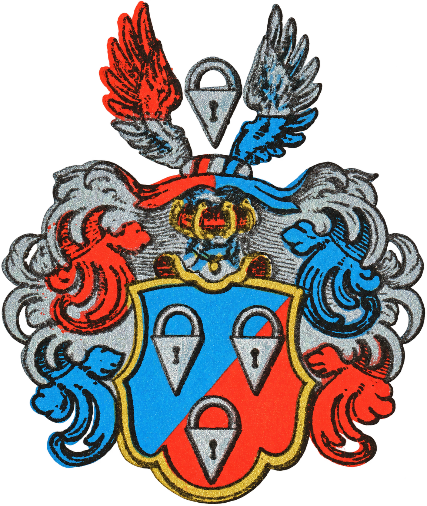

Rolf Anders Ödmark
Födelsedatum ej angivet.
Son till Anders Gunnar Ödmark.

Från den danska medeltidsätten Gyldenstierne och familjen Verglos till Silfverlååsgrenen kring Anders Johan. Följ linjerna från föräldrar till barn.
Niels Eriksen, omnämnd i ett testamente 1310, anges som far till Erik och Jakob Nielsen i Lise Selvig Olsens artikel i Personalhistorisk Tidsskrift 2003:1, sidorna 65–66. Bröderna beseglade ett köpebrev tillsammans 1328. Originalhandlingarna har inte granskats här.
Panter-grenen följer en genealogisk sammanställning. Uppgifterna om Eriks mor skiljer sig mellan släkttavlorna; kopplingarna visas därför streckade. Förnamnet NN betyder att namnet är okänt. Årtal har inte uppskattats.
Riddarhusets stamtavla skiljer Hans Verglos, Peters bror som dog 1648, från Peters son Hans som adlades Silfverlåås 1647 och dog 1654. Peters far är fortfarande endast känd som NN Verglos. Någon tidigare hemort i Nederländerna har inte identifierats.
Den möjliga dottern NN Verklaes och Göran Patkull följer ett redovisat arkivfynd: Riksarkivet, Biographica, P volym 8, bild 532. Forskarens läsning identifierar hennes far som Peter Ferkelås. Originalbilden återstår att granska; föräldralinjerna visas streckade.
Roller, titlar och yrken i personrutorna följer de angivna källorna: den danska Gyllenstierna-grenen, Gyllenstierna af Lundholm, Lex om rikshovmästaren, Ribbing, Stake, von Scheiding, Niethoff, Patkull, Riddarhusets stamtavla för Verglos och Silfverlåås samt Silfverlåås ättartavla. Amalias och Gunnar/Gustaf Valfrids uppgifter kommer från det tidigare kyrkoboks- och registermaterialet i livsberättelsen.
Militär karaktär och grad vid avsked behöver inte innebära att personen tjänstgjorde som chef på den nivån. Göran Patkulls koppling till Verglos-dottern är fortfarande ett forskningsspår.
Karl VIII Knutssons kungatitel och levnadsår följer Svenskt biografiskt lexikon hos Riksarkivet. Kristinas föräldrar anges i den länkade ättartavlan för Gyllenstierna af Lundholm.
Sköldarna visar släktvapen. Sköldbilder saknas ännu för Niethoff och de äldsta danska leden. Övriga personer utan identifierat släktvapen visas med namn.
Anders Gunnar Ödmarks namn och födelsedatum, 6 oktober 1932, stöds av födelseboken för Nordmaling och gravregistret för Frösö kyrkogård, som också anger dödsdagen 5 augusti 2022. Namnen Rolf Anders Ödmark, Elias Rolf Ödmark, Viktor Carl Ödmark och Oskar Erik Ödmark samt släktlänkarna mellan dem följer bekräftade familjeuppgifter. Deras födelsedatum är ännu inte införda.